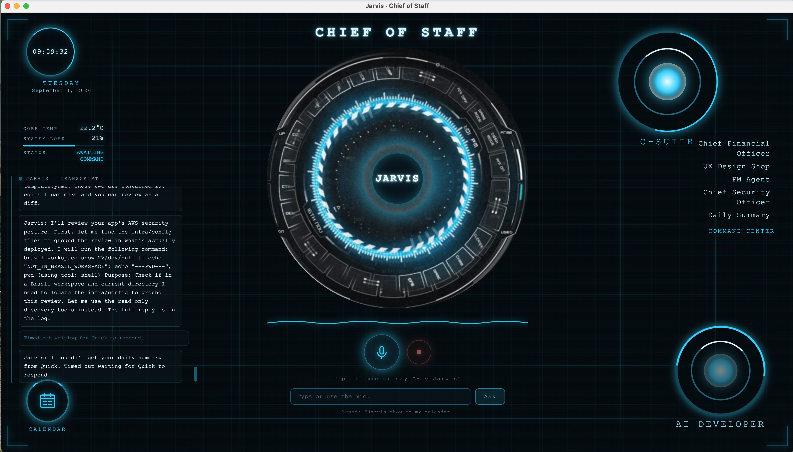
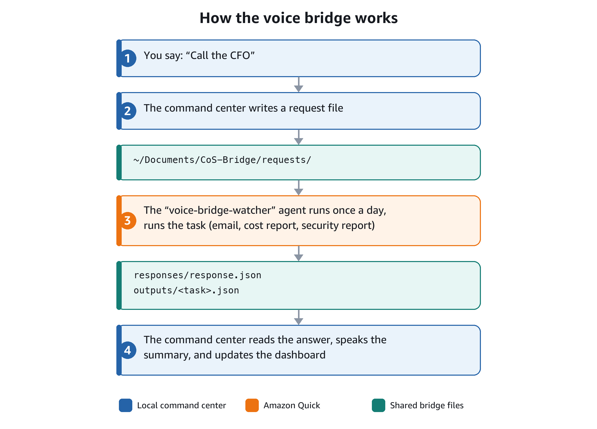

Develop an AI Chief of Staff for public sector customers
Posted: [Date] | Permalink | Comments | Share
Public sector teams devote a significant portion of each day to administrative work: compiling cost reports, monitoring security posture, triaging email and chat, and maintaining an accurate calendar. Individually, these tasks are minor. Collectively, they consume time and attention that would be better directed toward mission outcomes and the constituents these teams serve.
What if you had a chief of staff for that work — one that runs entirely on your own machine, listens when you talk to it, and answers back through a clean, high-tech dashboard? With an AI-powered integrated development environment (IDE) and a desktop productivity assistant, you can build exactly that in an afternoon, and it never leaves your laptop.
In this post, we walk through how to build a local, voice-activated “command center” — you can give it a fun name like Jarvis, Alexa, or Alfred — that briefs you on finances, security, your calendar, and your inbox. We cover the two prerequisites (a desktop assistant and an AI IDE), how they connect through a simple file “bridge,” why this pattern is a good fit for public sector constraints, and what to keep in mind on cost.
What you will build
The result is a desktop application that runs locally and gives you:
- A sci-fi style animated dashboard — a heads-up display with a live dial, transcript, and status readouts that react as you speak.
- Voice in and out — talk to it, and it speaks back a short briefing.
- C-suite “advisors” you can call by name, for example:
- Chief Financial Officer (CFO) — a spending/cost briefing.
- Chief Security Officer (CSO) — a security posture review.
- A UX Designer — spins up a new design project using the open source Open Design toolset.
- A Daily Summary — what happened across your work day, plus quick Calendar and Email checks.
- An “AI Developer” that drives your local AI IDE to build and refine things for you.
Everything runs on your Mac or desktop OS. There is no server to stand up and no data leaving your machine unless you explicitly wire an integration to do so. For example, say “Call my CFO” or “Chief Financial Officer” as the key command to call the agent.

Names are for fun demonstration purposes only. Any names shown (such as “Jarvis,” “Alexa,” or “Alfred”) are used solely as illustrative, user-chosen display names for a personal, local tool. All product names, logos, and brands are the property of their respective owners, and their use here is nominative and for demonstration purposes only. It does not imply any affiliation with, sponsorship by, or endorsement by those owners. Amazon Web Services and Amazon are not affiliated with, and do not endorse, any third-party marks referenced. Choose your own name for your assistant, and confirm you have the right to use any name or mark you adopt.
How it works: the file “bridge”
You build the bridge by prompting Amazon Quick after setting up Quick agents. The command center itself is intentionally simple and offline. It never calls a third-party API directly. Instead, it exchanges small JSON files with a desktop assistant through a shared folder called the bridge. Your desktop assistant does the heavy lifting — connecting to email, chat, and reporting sources — and writes the answers back for the command center to read aloud.
The flow looks like this:

The key idea: the desktop assistant creates and fills the
responses/ and outputs/ folders; the command
center only writes requests and reads results. That clean
separation is what keeps the local app simple and private.
Prerequisite 1: A desktop assistant to feed the bridge
Amazon Quick Desktop is a productivity assistant (available for macOS and Windows) that can connect to the tools you already use and act on a schedule. This is the engine behind the bridge.
- Learn about and download the desktop app: https://aws.amazon.com/quick/desktop/
- Getting started (install and sign in): Amazon Quick on desktop — Getting started
- Availability (preview) announcement: Amazon Quick desktop app for macOS and Windows (preview)
Before you create agents: three quick setup tasks
When you install Amazon Quick for desktop, do these three things first so the assistant has good local data to work with and a place to write:
- Enable your integrations — turn on the Google Calendar, Email, Microsoft Teams, and/or Slack connections so Amazon Quick has accurate local data to supply the voice app.
- Create the bridge folder — make a local folder named
CoS-Bridgein yourDocumentsfolder (~/Documents/CoS-Bridge). This is where the assistant and the command center exchange files. - Grant Amazon Quick access to the folder — in Amazon
Quick, open the left sidebar, click My Computer, and give
Amazon Quick access to your
CoS-Bridgefolder so it can read requests and write results there.
Then give Amazon Quick these agent prompts
With integrations enabled and the folder in place, create scheduled agents in Amazon Quick using plain-language prompts like these. (Adapt the specifics to your own sources.)
- Daily Report agent
Set up a Daily Report agent that runs at 3 a.m. and sends me an email. It should provide me with key activities from my email over the last week, upcoming events, and calendar key activities for the week.
- CFO Report agent
Set up a CFO Report that pulls my AWS cost & billing report data from my email, my Salesforce dashboards, and any reports that are cost- and budget-related.
- CSO Report agent
Set up a CSO Report that pulls in <enter your security-related email/source>.
The AWS Security Agent is also a Kiro Power that can scan a repository for you and summarize vulnerabilities — a useful complement to the CSO briefing.
To wire these into the voice app, you also create one
bridge-watcher agent — we named ours
voice-bridge-watcher — and give it plain-language instructions:
watch the requests/ folder, run the matching task, and write
the answer back to responses/ and outputs/. The
full,
copy-paste instructions
you hand the assistant (including the exact JSON shape it should write) ship
with the repository so you do not have to write them from scratch.
In our build, the assistant sent exactly the topics the command center asked for — a finance briefing, a daily summary, a calendar check — into the bridge folder, and the command center spoke them back. The accompanying setup document walks through this end to end.
For reference, these files ship in the repository:
docs/quick-setup.md— step-by-step Amazon Quick setup, including the copy-pastevoice-bridge-watcheragent prompt.docs/voice-bridge-spec.md— the file-bridge protocol and exact request/response JSON schema.docs/bridge-template/— the defaulttask_registry.jsonand per-task output files.
Prerequisite 2: An AI IDE to build and shape the app
Kiro is an AI-powered IDE, and the Kiro CLI is its command-line counterpart. Together they let you clone the starter project, run it locally, and then refine it in natural language until it looks and behaves the way you want.
- Download Kiro (IDE): https://kiro.dev/downloads · docs: https://kiro.dev/docs
- Install the Kiro CLI — the command center's “AI Developer” feature drives it to build things for you, safely scoped to a project folder. Open Design is a third-party, optional solution that works with Kiro IDE to instantly design and prototype products, and is open source. This repo is included for use if you choose to “call the UX Designer.”
- Clone the starter repository and run it:
git clone --recurse-submodules <your-repo-url> cd chief-of-staff-voice-command-center npm install npm start
Because the whole thing is a local application — not a cloud deployment — you own it outright. Open it in Kiro and ask for changes in plain English: rename the assistant, restyle the dashboard, add or remove an advisor, or change what a briefing says. The AI IDE is what turns a starter project into your command center. It runs on macOS and desktop operating systems (Windows and Linux), with the richest voice experience on macOS.
Why a desktop assistant is the right pattern
The reason this approach is powerful for public sector teams is that the desktop assistant can draw on many local connections you already have — for example Microsoft Teams, Slack, and email — and turn them into briefings the command center reads aloud. A few examples:
- Cost reporting — the assistant reads your finance/cost report emails and produces a CFO-style spending briefing.
- Security reporting — it summarizes security posture and findings into a CSO briefing.
- Daily operations — it scans your inbox, chat, and calendar and gives you a single morning summary.
Because that work happens through the assistant and lands in the bridge folder, the command center stays small, local, and easy to reason about — while still benefiting from rich, connected data sources.
Cost and token-use disclaimer
This solution is inexpensive to run, but it is not free, and costs depend on how you use it. Keep the following in mind:
- AI IDE / model usage — the “AI Developer” and advisor features send prompts to a model through Kiro / the Kiro CLI. That consumes tokens, which are billed under your Kiro plan or associated AWS account. Long or frequent requests cost more than short, occasional ones. See Kiro pricing.
- Desktop assistant — Amazon Quick has its own plans and availability terms (some capabilities are in preview and tied to specific account tiers). Confirm current pricing and eligibility before you rely on it. See Amazon Quick pricing.
- Your machine — everything else runs locally, so there is no separate cloud compute or storage bill for the command center itself.
Treat any numbers you see in a demo as illustrative. Before rolling this out to a team, review current Kiro and Amazon Quick pricing, and consider setting a habit of short, specific prompts to keep token use predictable. (This repository also includes an optional, local developer tool for tracking token use during development so you can understand cost as you build.)
Get started
To build your own AI chief of staff, take the following next steps:
- Download Amazon Quick for desktop and complete first sign-in: https://aws.amazon.com/quick/desktop/
- Download Kiro and install the Kiro CLI: https://kiro.dev/downloads
- Clone the starter repository, run
npm start, and open it in Kiro to make it your own. - Create the
voice-bridge-watcheragent in Amazon Quick using the setup instructions included with the project, and point it at the reporting sources you care about (starting with a cost or finance report for the CFO).
Give it a name you will enjoy saying — then ask it for your first briefing.